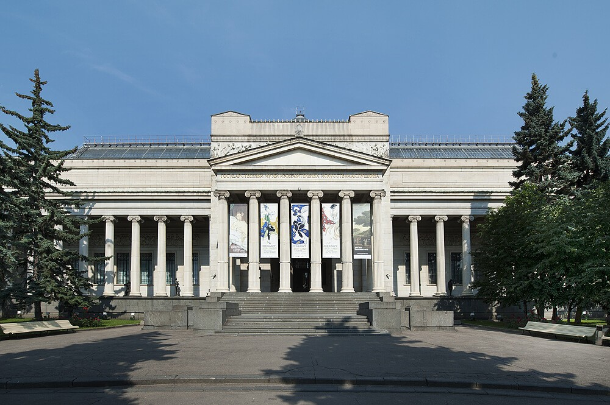
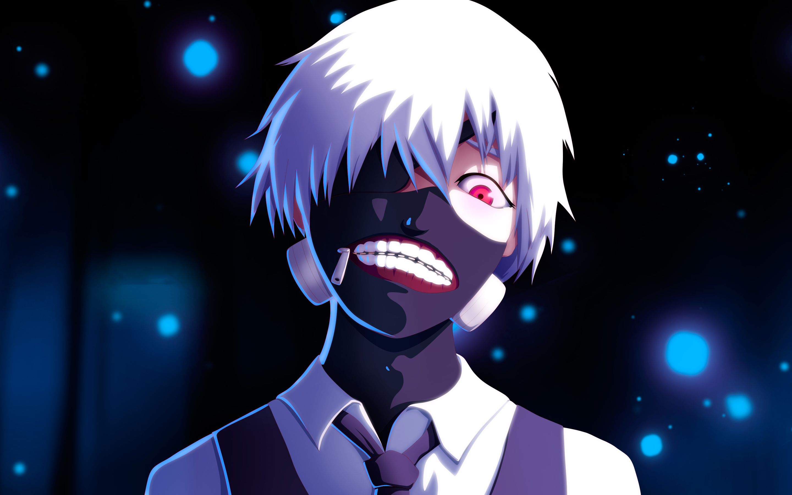

Государственный музей изобразительных искусств имени А.С.Пушкина
Государственный музей изобразительных искусств имени А.С. Пушкина (также известный как ГМИИ им. Пушкина) – это ведущий музей российского искусства в Москве, Россия. Музей был основан в 1912 году на основе коллекции художественных произведений, собранной И.Т. Триновым. С течением времени коллекция постоянно пополнялась и на сегодняшний день включает более 700 тысяч экспонатов различных эпох и стилей.
В музее представлены произведения западноевропейского искусства от древности до современности, русского искусства XVIII-XX веков, а также коллекция графики и скульптуры. Здесь можно увидеть работы таких великих художников, как Рембрандт, Ван Гог, Пикассо, Рубенс, Левитан, Кандинский, Шагал, а также многих других.
Государственный музей изобразительных искусств им. Пушкина находится в нескольких зданиях, в том числе в домах на Волхонке, Крымском валу и в здании Арт-Центра на Крымском валу. Основной экспозицией музея является постоянная коллекция, включающая в себя множество шедевров и произведений искусства различных направлений и эпох.
Государственный музей изобразительных искусств им. Пушкина не только является культурным центром Москвы, но и проводит множество выставок, концертов, лекций, кинопоказов и других мероприятий, позволяя посетителям окунуться в мир искусства и культуры. Музей привлекает как местных жителей, так и туристов, предоставляя возможность узнать об искусстве разных стран и эпох.
Посещение Государственного музея изобразительных искусств имени А.С. Пушкина – это отличная возможность познакомиться с великими произведениями мирового и русского искусства, насладиться их красотой и глубиной, а также пополнить свои знания о различных художественных направлениях и стилях.
Сотрудники
Экспонаты
О музее
Контакты
Телефон: +7 (977)-404-15-68
Email: museum.rus@gmail.com
Интересная информация
15.04.2024. Бесплатное посещение в Третьяковскую галерею в честь праздников..

Романюта Дмитрий
Посещение Государственного музея имени А.С. Пушкина
стал для меня удивительным и впечатляющим опытом.
Коллекция музея впечатлила меня своим разнообразием
и красотой. Работы таких художников, как Левитан, Ван
Гог, Кандинский, оставили на меня глубокое впечатление.
Особенно запомнилась выставка русского искусства XVIII-
XX веков. Я с удовольствием вернулся бы сюда снова и
всем рекомендую посетить этот удивительный музей
искусств.